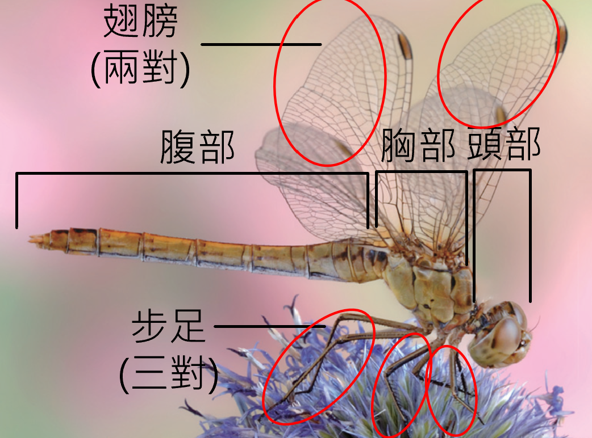
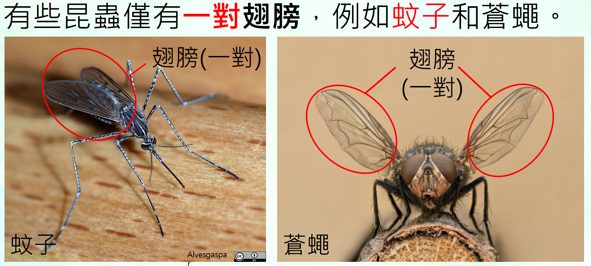
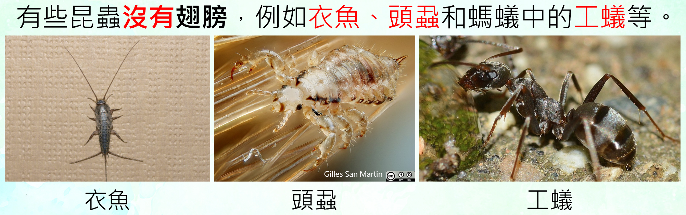
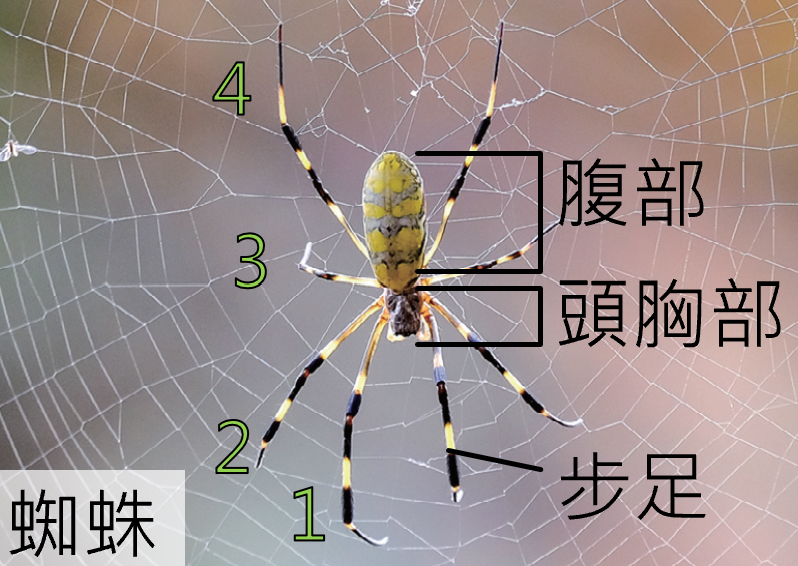
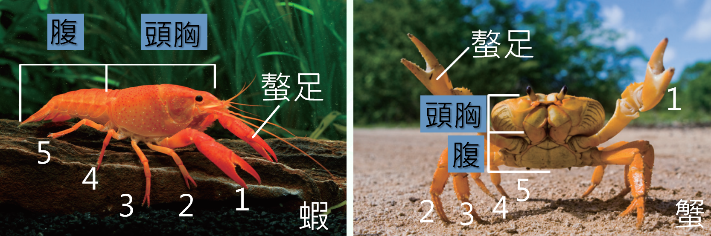
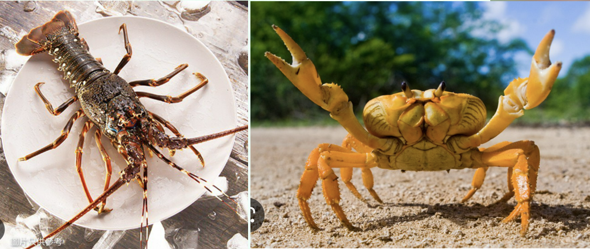

🔍 節肢分類挑戰
昆蟲、蜘蛛、蝦蟹
節肢動物種類很多，這一頁要用身體分區、步足對數、翅膀與螯足等線索，分辨常見的昆蟲、蜘蛛、蝦和蟹。
學
學習內容
昆蟲是陸地上最普遍、種類最多的節肢動物，身體分為頭、胸、腹三部分，大多具有三對步足及兩對翅膀。但有些昆蟲只有一對翅膀，例如蚊子和蒼蠅；有些昆蟲沒有翅膀，例如衣魚、頭蝨和螞蟻中的工蟻。



蜘蛛身體分為頭胸部與腹部，有四對步足。有些蜘蛛會結網，用以捕食昆蟲。
蝦和蟹多生活於水中，具有五對步足，第一對步足常變形成為螯足，可用來捕食和禦敵。



昆蟲
- 身體分為頭、胸、腹。
- 大多三對步足。
- 大多兩對翅膀，但也有例外。

蜘蛛
- 身體分為頭胸部、腹部。
- 有四對步足。
- 有些會結網捕食昆蟲。

蝦、蟹
- 多生活於水中。
- 有五對步足。
- 第一對常形成螯足。
1️⃣ 看身體分區
昆蟲是頭、胸、腹；蜘蛛是頭胸部與腹部。
2️⃣ 數步足對數
昆蟲三對、蜘蛛四對、蝦蟹五對。
3️⃣ 找特殊構造
昆蟲常有翅膀；蝦蟹第一對步足常變成螯足。
觀察口訣：昆蟲三對腳，蜘蛛四對腳；蝦蟹五對腳，第一對常成螯。
練
互動練習
1. 判斷每種動物的步足對數，點擊正確的數字。
數腳判身分蜻蜓
🦟
步足有幾對？
蜘蛛
🕷️
步足有幾對？
螃蟹
🦀
步足有幾對？（含螯足）
蒼蠅
🪰
步足有幾對？
蝦
🦐
步足有幾對？（含螯足）
衣魚
🐛
步足有幾對？（昆蟲但無翅）
2. 翻開動物卡，選出所有屬於本頁介紹的節肢動物代表。
翻牌多選3. 哪一項最符合昆蟲的主要特徵？
選擇題4. 點選所有正確描述。
多選任務5. 將類群配對到正確觀察線索。
下拉式配對6. 根據線索判斷牠是哪一類。
點選配對身體分頭、胸、腹三部分，大多有三對步足。
身體分為頭胸部與腹部，有四對步足。
多生活於水中，有五對步足，第一對常形成螯足。
7. 「只要沒有翅膀，就不可能是昆蟲。」這句話正確嗎？
情境判斷完成並答對本頁所有題目後，才能前往下一頁。